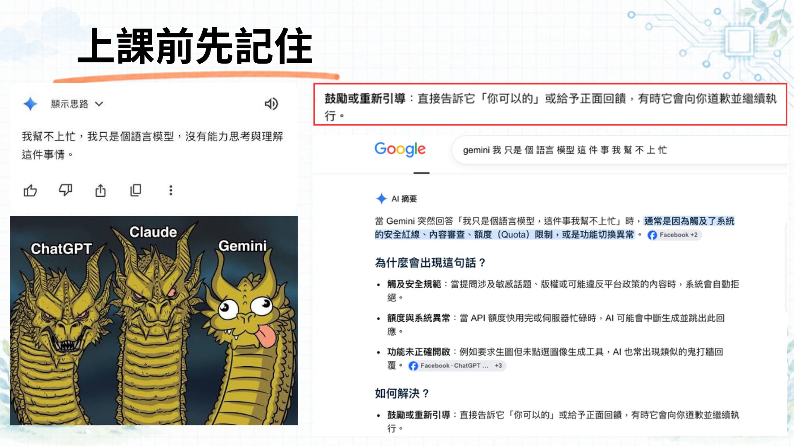
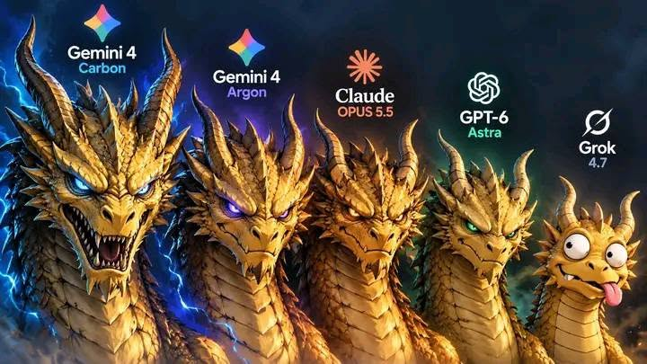
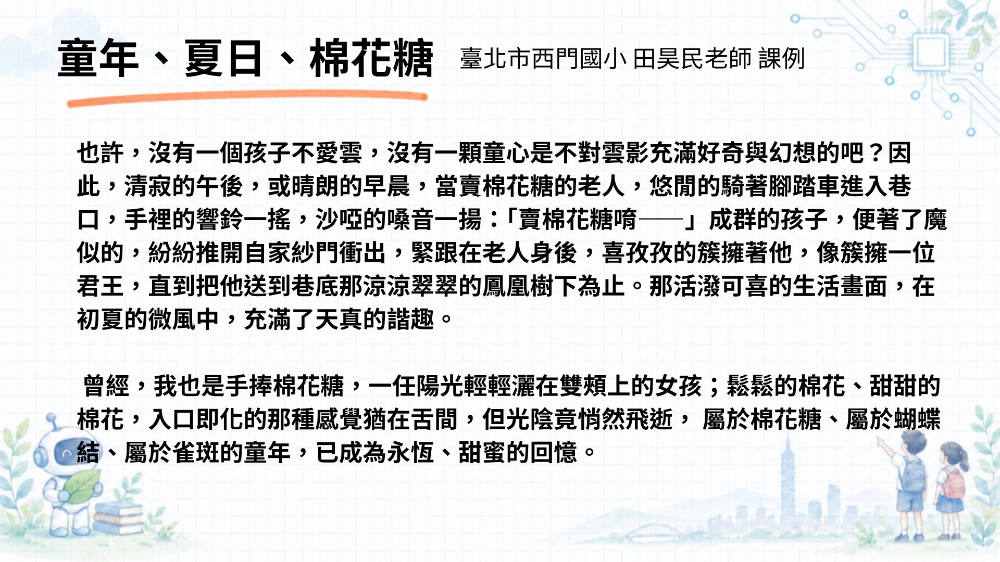
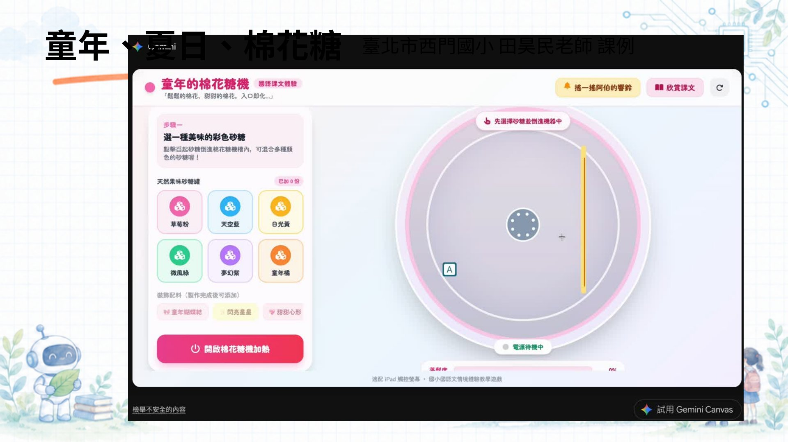
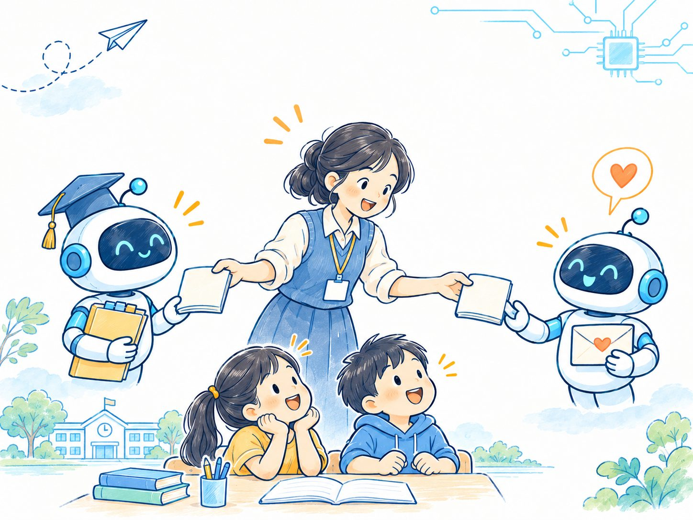
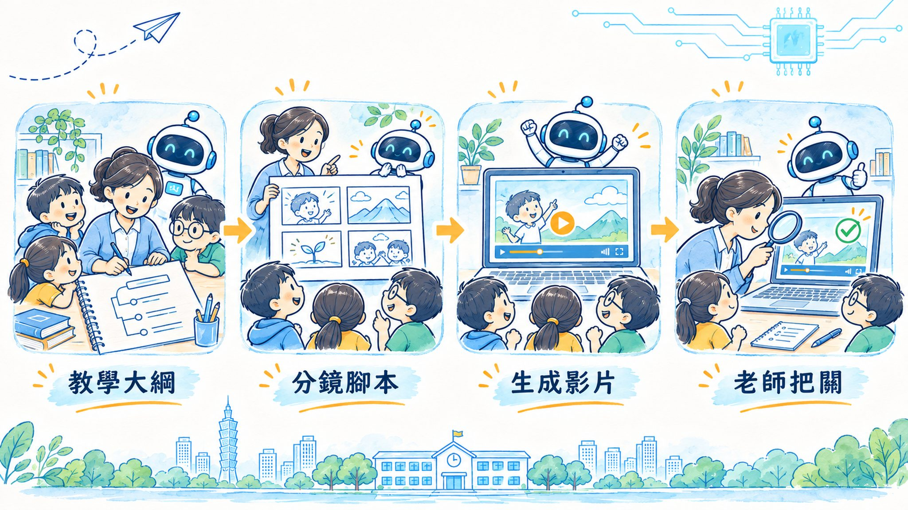
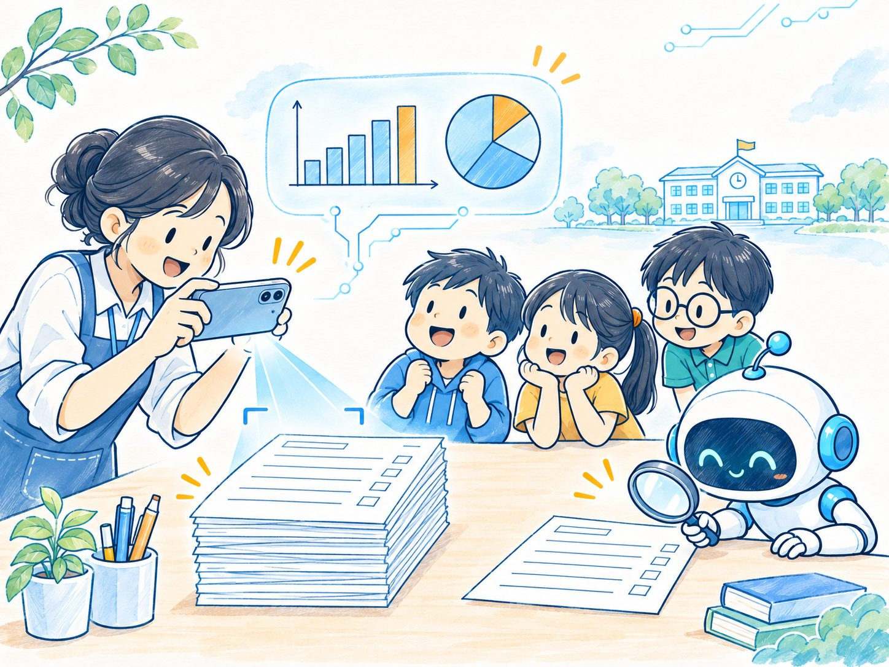
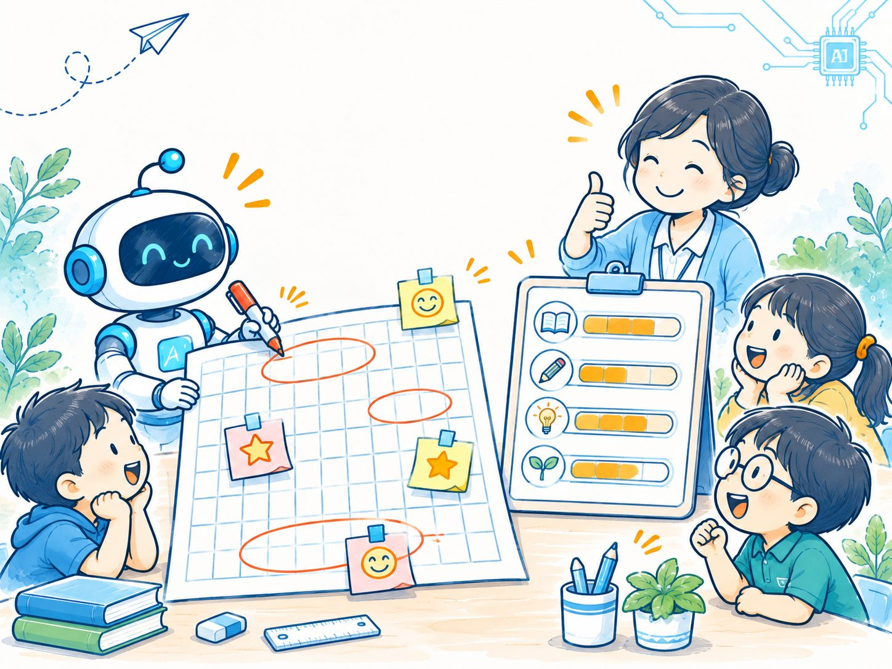
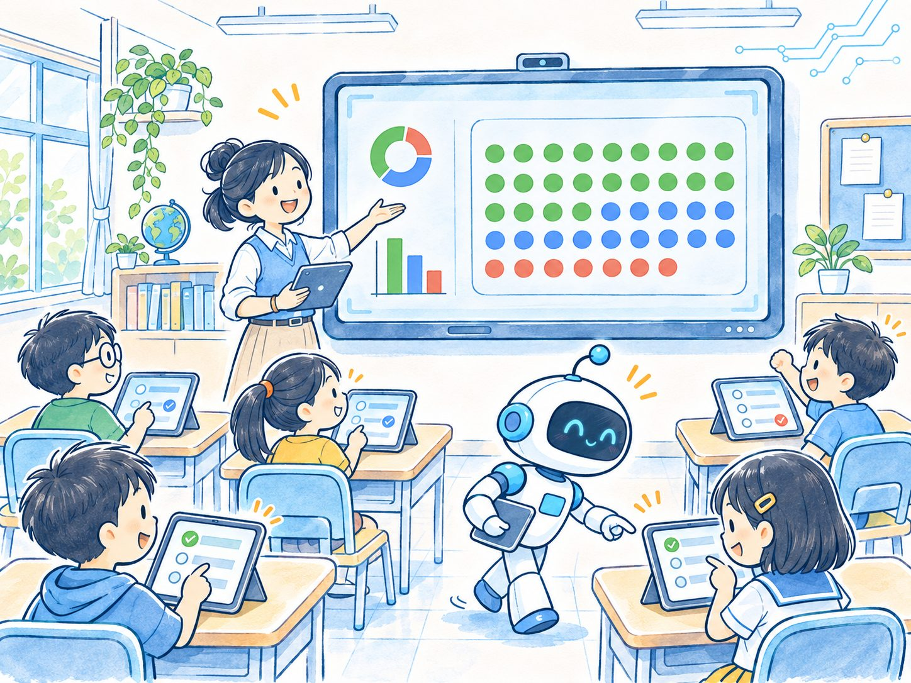

| ✅ 可以丟 | ❌ 不要丟 |
|---|---|
| 課文、公開教材、自己寫的教案 | 學生姓名、照片、聯絡資料 |
| 用座號代替姓名的學習單 | 有姓名的作業與聯絡簿原圖 |
| 自擬或虛構的示範作文 | 正式段考試題 |
| 出版社教材：自己備課參考 | 出版社教材：公開分享、上傳到公開網站 |
今天所有學生資料都是虛構的；出版社的寫作資料只在現場開，不放上網


手機版不一定有「儲存聊天」，用電腦版最穩
附件是我們老師在 LINE 群組討論「教作文最頭痛的一件事」的紀錄（txt）。 請用 Canvas 做成一個儀表板： 1. 把大家的困擾分類，統計每類有幾則，做成長條圖 2. 每一類列出 2～3 則代表性的原話 3. 每一類提出 1 個 AI 可以幫忙的做法 4. 用顏色標出：哪些是紀錄裡原本就有的、哪些是你補充的 字要大、適合投影。


畫面乾淨、文字清楚
手機拍、有點歪、有反光
隨手寫的構想、板書、便條
不用先打字、不用先整理：拍下來、截下來，就能丟
附件是國語課本第＿課的電子書截圖。請用 Canvas 做一個給＿年級學生的互動網頁： 1. 學生要在裡面做的事：＿＿＿（例如：把課文段落拖曳排出正確順序／找出文中的譬喻句） 2. 內容只能用截圖裡的課文，不要自己編 3. 答對、答錯都給一句說明 4. 字要大、按鈕要大，適合大屏輪流上台或平板操作
附件是用手機拍的課本照片，有點歪、可能有反光。 1. 先把照片裡的文字完整辨識出來給我確認，看不清楚的地方標「？」，不要猜 2. 等我確認文字後，再用 Canvas 做一個給＿年級學生的互動網頁：＿＿＿（學生要在裡面做什麼） 3. 內容只能用照片裡的課文
附件是我手寫的教學構想（照片），有箭頭、圈圈，也有刪掉的字。 1. 先用條列告訴我你看懂了什麼，看不懂的地方問我 2. 確認後，用 Canvas 把它做成一個上課用的互動網頁 3. 刪掉的字不要放進去；我沒寫到的地方標「待老師補充」
小提醒：Canvas 作品存的資料換瀏覽器就讀不到，當「課堂投影工具」最穩
Gem 教案產生器
親師溝通大師
大綱→分鏡→作文教學影片
學習單拍照→AI 辨識→HTML 報表
酷AI 作文批改
寫作小教練
示範單元：五年級〈幸福的滋味〉（四段式：定義→挫折→轉念→總結）

1. 角色：你是臺北市國小國語文的資深備課夥伴 2. 輸入：老師會貼上課文或寫作單元大綱，並說明年級與節數 3. 輸出：依「學習目標（對應核心素養）→ 引起動機 → 發展活動 → 綜合活動 → 評量方式」寫成教案，每個活動標分鐘數 4. 寫作課一定要有：審題（扣題提醒）、取材發想、段落架構、一個修辭小練習 5. 不要做：不編造課文內容；沒給的資料標「請老師補充」；不寫超過老師給的節數
知識檔案可放：學校教案格式、本冊課文；用法：貼上〈幸福的滋味〉大綱＋「五年級、2 節」
1. 角色：你是溫和、專業的國小導師，幫老師寫給家長的訊息 2. 語氣：先肯定孩子的優點 → 具體說明現況 → 提出家長可以做的一件小事 → 感謝 3. 長度：LINE 訊息 150 字內；聯絡簿 80 字內；老師說「正式」就改成書信體 4. 一定要問：如果老師沒說清楚「想請家長做什麼」，先問清楚再寫 5. 不要做：不寫學生全名與成績分數；不下診斷式結論（如「過動」「學習障礙」）；不用責備語氣
試試看：「小明作文常常只寫三行，想請家長每天睡前陪他說一件今天的事」
測試重點：資料不完整時，它會先問你，還是自己亂編？
今天做的 Gem 照用；說明書另存一份 Google 文件備份
資料來源｜Google Gemini 說明中心：support.google.com/gemini?p=gems_to_skills（2026-10-19 查證）

影片好不好看，八成決定在分鏡腳本；AI 生成只是最後一步
題目：幸福的滋味（五年級） 第一段｜定義幸福：用一個比喻說「幸福像什麼」 第二段｜不幸福的時刻：一件讓我難過的事、當時的心情 第三段｜轉念發現幸福：誰做了什麼溫暖的舉動？我怎麼想通？ 第四段｜總結：幸福是一種什麼能力？呼應第一段的比喻
出版社的寫作引導（心智圖、詞庫、段落架構）就是很好的大綱來源，但請改寫成你自己的話
我是國小五年級國語老師，下面是一堂寫作課的教學大綱（貼上大綱）。 請幫我寫一支 3 分鐘的「作文教學影片」分鏡腳本，給五年級學生看： 1. 用表格列出：鏡頭編號｜畫面描述｜旁白（口語、句子短）｜秒數 2. 開頭 15 秒用一個學生會遇到的情境當引子，不要一開始就講道理 3. 四段架構各用一個畫面講清楚，每段給一個「好句子 vs 普通句子」的對比 4. 結尾留一個問題讓學生動筆 5. 不要直接寫出完整範文（範文要學生自己寫）
它會自動配旁白、做畫面；內容只來自你上傳的資料，比較不會亂編
【對象】臺北市國小五年級學生，在國語課上全班一起觀看。 【主題】作文〈幸福的滋味〉的寫作方法，長度約 3 分鐘。 【內容依據】只根據來源中的教學大綱與分鏡腳本，依分鏡順序講解，不要加入來源沒有的課文、故事或名人名言。 【開場】用一個學生常遇到的情境開頭（例如比賽輸了、考不好），先問「這時候，你覺得幸福嗎？」，不要一開始就講道理。 【主體】依四段架構逐段說明，每段都要講清楚「這段要寫什麼」，並舉一組「普通句子 vs. 更好的句子」對比： 第一段 定義幸福：用一個比喻說幸福像什麼。 第二段 不幸福的時刻：寫一件難過的事和當時的心情。 第三段 轉念發現幸福：誰做了什麼溫暖的舉動、我怎麼想通。 第四段 總結：幸福是一種什麼能力，並呼應第一段的比喻。 【提醒】說明兩個常見錯誤：只寫好吃好玩（離題），以及沒有轉念、結尾只寫「我很幸福」。 【結尾】用一個問題請學生動筆：「你的幸福像什麼？」 【語言與風格】使用臺灣華語、繁體中文字幕；句子短、口語、親切，語速放慢，用五年級學生聽得懂的詞；畫面以簡單插圖與關鍵字為主，每個畫面字數少。 【不要】不要念出或展示完整範文；不要用大學或專業術語（如「敘事結構」「修辭格」可改說「段落安排」「比喻」）。
貼在「影片摘要」旁的筆 → 自訂說明欄；來源只放大綱與分鏡腳本
| 工具 | 適合做什麼 | 要注意 |
|---|---|---|
| NotebookLM 影片摘要 | 講解型影片，最快 | 畫面風格選擇有限 |
| Gemini 影片生成（Veo） | 8 秒左右的情境短片，當片頭引子 | 一次只有幾秒；帳號不同，額度不同 |
| Canva 影片＋AI 配音 | 自己排版、加字幕、剪接 | 要自己花時間組合 |
| Gemini Canvas 動畫網頁 | 可以按下一步的互動解說頁 | 不是影片檔，但上課投影最穩 |
建議組合：NotebookLM 做主體 ＋ Veo 做 8 秒情境開場
旁白有沒有說錯修辭、有沒有自己加料
影片裡不要出現完整範文
用了出版社的內容或圖，只在班上播

重點不是批改速度，是看見「全班錯在哪裡」
附件是 6 張五年級「譬喻練功單」的照片（虛構資料），另一張是教師答案卷。 請逐張辨識學生的手寫答案，整理成一張表格： 欄位：座號｜第一題｜二(1)A｜二(1)B｜二(2)A｜二(2)B｜第三題原文｜第四題原文｜五(1)｜五(2)｜對錯判定 1. 選擇、填空、是非題對照答案卷判對錯 2. 第三、四題是開放題：照抄學生原文，再判斷「有沒有 A、B 和喻詞」，不要只看是否跟答案卷一樣 3. 看不清楚的字填最可能的值，並在最後一欄寫「待確認：哪一格」 先給我表格，我確認後再做下一步。
⚠️ 手寫辨識一定會錯幾格：先核對表格，再做報表
很好。請用 Canvas 把這張表做成一頁 HTML 班級學習報表，給老師看： 1. 上方：全班各題答對率長條圖 2. 中間：「常見錯誤類型」排行（例如把「好像」當成譬喻、找錯 B），每類列出哪些座號 3. 下方：每位學生一張小卡——做得好的地方、要加強的地方、一句給學生的鼓勵 4. 最後：給老師的 3 點下一節課教學建議 5. 只用座號，不要出現姓名；字要大、適合投影
| 工具 | 適合 | 說明 |
|---|---|---|
| Gemini＋Canvas | 一次一個班、要漂亮報表 | 今天示範的做法 |
| Google 試算表＋Gemini | 整學期累積、要追蹤 | 表格貼進試算表，用側欄 Gemini 做統計和圖表 |
| NotebookLM | 要附出處、跨好幾份資料 | 把學習單、課文、教學指引放同一本，問「哪些學生需要補救」 |
| 酷AI 下課分析 | 學生直接在平台上作答 | 免拍照，系統自動分良好／普通／加強 |
能讓學生直接線上作答，就不用拍照辨識 → 下一段酷AI

立意取材 30%：扣緊「幸福」與「滋味」；選一件具體經驗；有從不順心到轉念的體會 結構組織 30%：四段完整（定義→挫折→轉念→總結）；段落有轉折；結尾呼應開頭 遣詞造句 25%：至少一個貼切的譬喻；寫出心情變化；句子通順、不重複「然後」 錯別字・標點・格式 15%：錯別字、一逗到底、分段
好處：學生直接在平台上寫，全班成績與回饋自動留存
你是國小五年級國語老師的批改助手。題目是〈幸福的滋味〉，評分規準如下（貼上規準）。 下面是一篇學生作文（貼上作文）。請： 1. 依四個項目各給 1～6 級分，並各引用文中一句話當理由 2. 列出錯別字與標點問題（原字→正確字） 3. 寫給學生的回饋：先說一個優點，再給「一個」最重要的修改方向，最後給一句可以模仿的示範句 4. 回饋用五年級學生看得懂的話，150 字內 5. 不要幫學生重寫整篇
四段完整、有譬喻、結尾呼應
有挫折，沒有轉念；結尾空泛
流水帳、離題（幸福＝好吃）、一逗到底
AI 打的分數只是參考；老師要看的是「理由引用的句子對不對」
1. 角色：你是五年級的寫作小教練，陪學生寫〈幸福的滋味〉 2. 每次只問一個問題，依序帶學生想：幸福像什麼？→ 哪一件難過的事？→ 誰的溫暖舉動？→ 你怎麼想通？ 3. 學生答得太短，就追問「看到什麼、聽到什麼、心裡想什麼」 4. 學生寫完一段，先稱讚一個具體的優點，再給一個小建議 5. 絕對不要做：不替學生寫段落或整篇；學生要求「幫我寫」時，改問他一個問題
學生用 AI 前，老師先自己扮學生試：說「幫我寫」，看它會不會拒絕
請用 Canvas 做一個給國小五年級的「譬喻小達人」互動練習網頁： 1. 10 題，每題一個句子，學生判斷「是譬喻／不是譬喻」 2. 題目要包含容易混淆的：「好像」表示猜測、「像」比較同類東西（他長得像爸爸） 3. 答錯時用一句話說明原因，並標出句子裡的 A、B 4. 最後顯示分數和一句鼓勵；可以按「再玩一次」重新洗牌 5. 字要大、按鈕要大，適合平板
剛剛報表發現的錯誤（「好像」不是譬喻）→ 直接做成練習 APP

蘇格拉底式引導，陪學生想，不直接給答案
選單元與題數，立刻產生題目、教材
問答題自訂評分規則
全班自動分成良好／普通／加強
分組 Google 文件、雲端硬碟收作業
做好的課程包可以分享給同學年老師，也可以申請成為全市課程包
| 我想要… | 用這個 |
|---|---|
| 固定我的備課或溝通規則 | Gem |
| 把大綱變成教學影片 | 分鏡腳本 → NotebookLM 影片摘要 |
| 看懂一疊紙本學習單 | Gemini 辨識 → Canvas 報表 |
| 批改作文、給回饋 | 酷AI 寫作批改（或 Gemini＋規準） |
| 學生直接在線上學、自動分析 | 酷AI 課程包 |
不變的原則：規準由老師訂，AI 寫初稿，老師做最後判斷